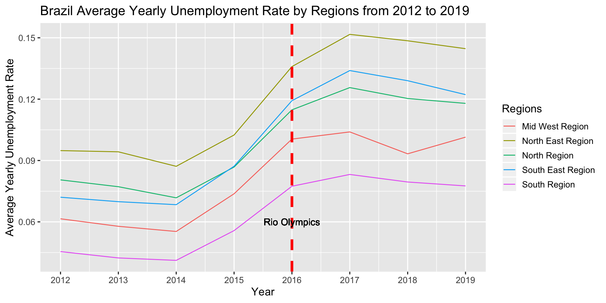
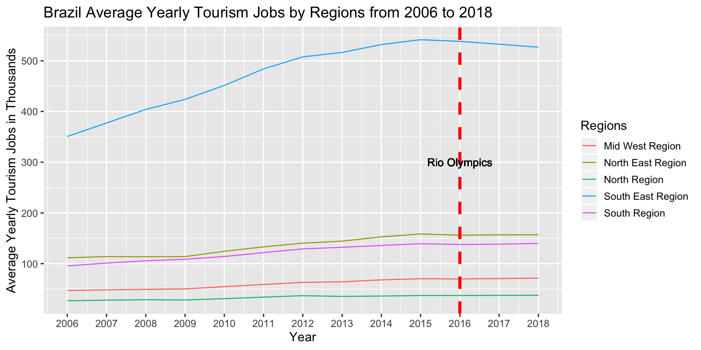

Chapter 4 Canada - 2010 Vancouver Winter Olympics
Analysis of Regional Economic Impacts of Hosting Olympics on Canada
Introduction
In this section, we discussed the regional difference of economic impacts on Brazil by the 2016 Olympic Games. To find whether or not there were significant differences on a regional level, we analyzed Brazil GDP, monthly income, unemployment rate and tourism over years. The 2016 Olympic Games took place at Rio de Janeiro. Rio was awarded to host the games in 2009.
Region Description
We can divide Canada to 5 regions, where Vancouver is in the West Coast region.
1. The Atlantic Provinces: Newfoundland and Labrador, Prince Edward Island, Nova Scotia, New Brunswick
2. Central Canada: Quebec, Ontario
3. The Prairie Provinces: Manitoba, Alberta, Saskatchewan
4. The West Coast: British Columbia
5. The Northern Territories: Nunavut, Northwest Territories, Yukon Territories
Reference: https://www.canada.ca/en/immigration-refugees-citizenship/corporate/publications-manuals/discover-canada/read-online/canadas-regions.html
4.1 Canada GDP
The first potential economic outcome of the Olympics that we consider is GDP growth. We make a multiple time series plot to visualize the regional GDP in Canada.

The plot shows that there is a slight decreasing for Central Canada and the Prairie provinces between 2008 and 2009, following by a slight increasing pattern after 2009. For the other three regions, the lines of GDP stay quite stable. The 2010 Olympics does not impact regional GDP growth significantly. GDP on the West Coast (British Columbia) appears to improve after 2010 (when the Olympics were held), but as indicated in the table below, the improvement did not outpace that of other regions after the Olympics.
Canada Regional GDP Increasing Rate from 2001 to 2019
The table shows that the highest GDP growth rate appears at the Northern territories which is 13.87% in 2001, whereas the lowest GDP growth rate appears at the Northern territories which is -5.85% in 2009. Also, in 2009, all 5 regions have negative GDP growth rates, but in 2010, all 5 regions have positive GDP growth rates. However, the West Coast does not show a higher GDP growth rate than other 4 regions. The Olympics may have increased GDP growth for Canada, but there is no significant regional difference in GDP growth after the Olympics.
4.2 Canada Household Income Per Capita
We next consider household income per capita. We also make a regional time series plot first.
Regional Average Household Income Per Capita

The plot shows that household income per capita in the West Coast increases fast between 2006 and 2007. It decreases from 2008 to 2010, then starts to increase after 2010. The Prairie provinces follows a same pattern as the West Coast. Also, the Northern territories increases fast between 2012 and 2013. After 2013, household income per capita in the Northern territories exceeds that in the Prairie provinces. Similar to our observation about GDP, although the West Coast grows after the Olympics, its growth rate did not exceed that of the rest of Canada. To make our conclusion more precise, we calculate the household income per capita increasing rate as shown in the following table.
Canada Regional Household Income Per Capita Increasing Rate from 2001 to 2016
The table shows that the highest household income per capita growth rate appears at the Northern territories which is 23.99% in 2013, whereas the lowest household income per capita growth rate appears at the Prairie provinces which is -2.25% in 2010. Also, the increasing rates increase for all 5 regions in 2011 comparing to 2010. However, the West Coast does not show a higher growth rate than other 4 regions. Similar to our analysis on GDP, the Olympics may have increased household income per capita growth for Canada, but there is no significant regional difference in GDP growth after the Olympics.
4.3 Canada Unemployment Rate
Next, we consider possible gains in employment resulting from the Olympic games by visualizating the overall unemployment rate in Canada over years. This helps us to better understand the national unemployment rate pattern.

From the stacked bar chart, we find that the lowest unemployment rate appears in 2007 whereas the highest rate appears in the Olympic year 2010. Unemployment appears to increase slight from 20018 to 2010 and remains steady (but not decrease) after the Olympics.
Unemployment Rate by Regions
To better understand the impact of the Olympics, we plot unemployment over time in different to compare how unemployment changed in British Columbia (where the Olympics were held) versus other regions.

From 2004 to 2006, the unemployment rate decreases for all 5 regions, but increases from 2008 to 2009. After 2010, the West Coast (British Columbia) has a decreasing pattern in unemployment but not one that was significantly different from the decrease in other regions. This trend can also be observed in the below table, in which the West Coast does not appear to outperform other regions in employment gains after 2010.
Canada Regional Unemployment Rate Increasing Rate from 2001 to 2016
The table shows that the highest unemployment rate increasing rate appears at the West Coast which is 67.39% in 2009, whereas the lowest one appears at the Northern territories which is -23.67% in 2002. Also, the increasing rates of unemployment rate decreases in 2011 comparing to 2010 for the regions except the West Coast. The Olympic games did not result in a significant decrease in unemployment rate for the West coast.
4.4 Canada Tourism
The last part for our analysis is on Canada tourism over years. We first plot the overall number of international visitors in Canada to get a better understanding of the national trend.

The national-level time series of number of international visitors in Canada shows a significant decreasing pattern from 2000 to 2010. Then the number of visitors increases slowly after 2010. The Olympics may have increased Canada’s international tourism, but not significantly. Then we want to focous on the regional international tourism.

The plot shows the number of international visitors entering each of the 5 regions. From this plot, we find that the Northern territories, the Prairie provinces and the Atlantic provinces all have stable patterns. Also, the number of visitors is low over years for each of the 3 regions. The central Canada follows the same pattern as the national international visitors as shown in the time series plot before. The line of the West Coast is also relatively stable, but there is a spike in 2010. It is much possible that the 2010 Winter Olympics in Vancouver causes the spike. However, the spike only lasts for a very short time.
From the analysis on Canada tourism, it does not appear that British Columbia (West Canada) benefited substantially from hosting the Olympic games: although there was a spike in tourism in early 2010 (likely due to the Olympics), international tourism held steady after 2010 with slight increases (but not visibly different from those in other regions). Since the Prairie provinces, the Northern territories and the Atlantic provinces has low and stable patterns over time, these 3 regions’ effects on tourism are neglectable. We want to look at tourism and economic data within British Columbia and Vancouver to better understand the tourism impact of the Olympics.
4.5 Targetting Tourism in Vancouver
We first visualize the monthly tourists in Vancouver.
Note: the 2010 Olympics occur around mont 120.
Since this data is highly cyclical, we graph the year-over-year change in tourism (starting from January 2001) so that changes are measured between corresponding points in the cycle:
We notice a spike slightly after the month 100, which corresponds to the 2010 Olympics, and a dip slightly after, which corresponds to the year after the Olympics. However, the year-over-year changes do not appear to have an upward trend or spike after the Olympics. We also graph the total number of tourists for each year and the year-over-year change:

Total annual tourism appears to have an upward trend. However, trends in tourism growth do not appear to change over time. Growth appears to stay in the positive ranges it was at during previous periods of positive growth—we furthermore note that past declines at tourism occurred during recessions (early 2000s and 2008-2009). There is no evidence that the increases in tourism during the recovery (2010 onwards) are any greater than increases in previous periods of economic growth.
We now examine economic variables for Vancouver from 2000-2015:

All graphs appear to show steady growth except during recessions (early 2000s or 2008-2009). We now examine economic trends by region and industry. Below is a plot of changes in tourism employment for different regions of British Columbia:

There does not appear to be a substantial deviation in trends after the Olympics. While tourism employment in Cariboo, Thompson Okanagan, and Northern British Columbia appear to increase in 2013 more than in other regions, employment also falls faster in the subsequent year, suggesting that there was not a differential effect on employment in different regions from the Olympics.
We plot employment in different sectors within British Columbia over time:

We consider changes in employment in various industries: the faster increase in the tourism sector does not appear to deviate substantially from the also faster increases in employment in the good-producing and services sectors.
We finally compare changes in tourism to changes in economic variables (specific in the tourism sector):

The clearest trends appear in the relationship between real GDP (from the tourism sector) and annual tourism and the relationship between revenue and tourism. Running linear regressions on the relationships, we get the following R2 values:
R^2 for real_GDP: 0.5529484405162801
R^2 for employment: 0.0019137247445131234
R^2 for revenue: 0.6149010419836605
R^2 for wages_and_salaries: 0.24519121848207018
R^2 for consumption_taxes: 0.03556594395098145
The coefficients are only significant for the relationships between real_GDP/tourism and revenue/tourism. Thus, tourism does not appear to have a significant impact on employment, salaries, or taxes, even within the tourism sector.
Conclusion:
There is some evidence that there is an increase in tourism following the 2010 Olympic games. However, there is not strong evidence that these sustained increases in tourism contributed to substantial economic benefits for Vancouver, British Columbia, or Canada. Based on regional and national economic data, it appears that although there were increases in variables such as employment and wages, improvements in the tourism sector and in regions closest to where the Olympics were held were not larger than improvements in other sectors or areas. Future areas of investigation should be to determine whether the post-2010 increase in total (not only international) tourism to Vancouver exceeded that of other regions of Canada and likewise for economic indicators in the tourism sector.